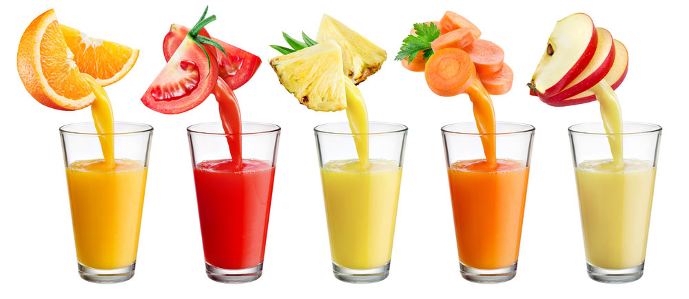

У своїй книзі «Історія людського тіла», професор Еволюційної біології людини Гарвардського університету Даніель Ліберман, з позиції еволюції намагається відповісти на питання: Чому наші тіла є такими, якими вони є? І як найкращим чином дбати про своє тіло, беручи до уваги мільйони роки еволюції, аби якомога довше зберігати здоров’я?
Деякі висновки професора йдуть всупереч поширеним переконанням щодо здорового способу життя. Як і будь-яка публікація чи дослідження, ці тези не є істиною в останній інстанції, але, зважаючи на посаду та науковий ступінь її автора, думаю, варті того, або з ними ознайомитися. Також, як і в будь-які інші міфи, ці п’ять не є обов'язково притаманними кожній людині на планеті, але мені вони зустрічалися, а в правдивості деяких з них я була переконана і сама – поки не ознайомилася з працею професора Лібермана.
Міф 1: Веганство та вегетаріанство корисні, бо людина еволюціонувала їсти овочі та фрукти
Людський організм чудово пристосований для споживання м'яса та риби. Більш того, ми такі, які є, саме тому, що почали їсти м’ясо. Рід Homo існує кілька мільйонів років і, згідно з археологічними знахідками, щонайменше 2.6 мільйона років людина (тоді ще більш схожа на мавпу) їсть м’ясо – спочатку в сирому виді, а потім – у термальній обробці.
Найдавніші пращури людини мали маленький мозок і велику систему травлення, бо перетравлення рослинної їжі вимагає великої кількості енергії. Щойно ми почали споживати м'ясо, яке є більш ефективним джерелом енергії, ніж фрукти та коріння, дуже повільно шлунки, кишки та інші органи травлення почали зменшуватися, а мозок - збільшуватися. У австралопітека Люсі (знахідки в Ефіопії частини скелету, датованої 3.2 мільйони років тому), мозок важив всього 450 грамів. У сучасної людини, навіть у тих, хто пише дурні коментарі під статтями, – 1300 -1400 г мізків.
Разом з тим наші зуби та щелепи стали меншими, з'явилися різці, а також зменшилися м'язі в нижній частині обличчя – як на мене, ми стали привабливішими. У наших попередників з’явилося більше вільного часу – печеру розмалювати чи змайструвати наконечник для спису. А також саме полювання та розподіл праці, що з'явився у результаті, вимагав більшої координації між членами племені, що, у свою чергу, сприяло розвитку когнітивних здібностей (мізки росли).
Лише тому, що ми еволюціонували їсти м’ясо, не означає, що ми мусимо їсти м'ясо.
Звичайно, це не означає, що у веганів та вегетаріанців від браку м’яса почнуть витягуватися кишки та зморщуватися мізки. Для подібних змін подібні сотні тисяч років еволюції. До того ж, одомашнені овочі та фрукти є кращим джерелом енергії, ніж дикі.
«Лише тому, що ми еволюціонували їсти м’ясо, не означає, що ми мусимо їсти м'ясо. Загалом, вегетаріанці живуть довше», - написав мені професор Ліберман, до якого я звернулася за роз’ясненнями, що ж тепер робити веганам. «Нічого поганого немає у тому, аби бути веганом чи вегетаріанцем, але я вірю, що ростити дітей веганами – небезпечно», - додав він.
Міф 2: Фреші та соки є корисними
З`їсти яблуко – в рази корисніше, ніж виготовлений з нього сік чи навіть власноруч зроблений фреш. У фруктах є глюкоза та фруктоза (близько половини останньої печінка перероблює на глюкозу). Глюкоза організму дуже потрібна - без неї клітини, у тому числі мозку, помирають. Але завелика кількість глюкози має шкідливий ефект. Мозок та підшлункова залоза постійно моніторять рівень глюкози в крові за допомогою гормону інсуліну. Втім, організм не пристосувався до того, аби швидко виділяти саме стільки інсуліну, скільки потрібно. Фрукти не були такими солодкими як зараз, а тортів ще 2 тисячі років тому не існувало, не говорячи вже про соки та пепсі-колу. Якщо глюкози надходить зразу дуже багато, то інсуліну виділяється більше, ніж треба. Більше глюкози зберігається як жир, а постійно підвищений рівень інсуліну веде до діабету 2-го типу.
Глюкоза з яблука обробляється ефективніше, бо надходить повільніше і організм має можливість виділяти оптимальну кількість інсуліну та пускати її у справу, а не ховати панічно у жирі. Глюкоза у ньому зав’язана у волокні, що, по-перше, уповільнює швидкість переробки вуглеводів у цукри та транспортування калорій в кров та органи, але пришвидшує проходження їжі через кишки, що дає почуття ситості. Отже, відкладіть свою соковижималку – помийте яблуко чи грушу.
Якщо глюкози надходить зразу дуже багато, то інсуліну виділяється більше, ніж треба.
До речі, жувати потрібно і дітям. Хоча у каші, супчику чи пюре нічого поганого немає, тримати дітей на рідкій дієті не варто. «Механічні дії, які генеруються жуванням їжі, не лише допомагають розвинути щелепу правильної форми та розміру, але і також допомагають розвинути правильну форму окремих зубів, аби вони правильно містилися у щелепу», - пише Ліберман. Він пропонує дітям жувати жуйку без цукру, аби уникнути візитів до ортодонта, хоча, зазначає він, ця його пропозиція ще не має відповідного наукового підтвердження.
А от коли я ділюся з ним своєю новоспеченою теорією, що ненависна мені в дитинстві манна каша та інша «дитяча їжа» може бути причиною моїх високих витрат на стоматолога, він її відразу відкидає. «Карієс є наслідком споживання їжі з високим змістом крохмалю та цукру», - нагадує професор.
Міф 3: Спорт – найкращий спосіб позбутися зайвої ваги
Професор звертає увагу на те, як мало калорій ми втрачаємо, коли займаємось спортом та важкою фізичною працею. У день написання статті я пробігла трохи більше 5 км і спалила аж 324 калорії, що відповідає калорійності трьох бананів, або 1 булочки. І коли людина раптом витрачає багато енергії, в неї виділяється гормон стресу кортизол, від якого людина стає голодною. Організм сприймає цю ситуацію як сигнал про те, що потрібно було втікати від хижака, і запускаються відповідні механізми. І, якщо займатися спортом за рахунок сну, то шкоди буде більше, ніж користі, бо брак сну сприяє виділенню гормону голоду греліну. Думаю, що всі бачили будівельників та інших робочих, що займаються важкою фізичною працею, з животиками.

«Можна втратити вагу завдяки фізичній активності, але це вимагає величезних зусиль та часу, - написав мені професор, в якого я поцікавилася, а як же тоді боротися із зайвими кілограмами. – Дієта діє набагато швидше. Однак, фізична активність має вирішальне значення у тому, аби підтримувати здорову вагу. У будь-якому разі, чи потрібно вам втрачати вагу чи ні, фізична активність має значні переваги».
Можна втратити вагу завдяки фізичній активності, але це вимагає величезних зусиль та часу. Дієта діє набагато швидше.
Про переваги фізичної активності – добра частина книги. Ми еволюціонували, щоб вести активний спосіб життя. Щоправда, щодо користі від надзвичайно активного способу життя – ультрамарафонів, змагання «Залізна людина» - дослідники висловлюють певні сумніви.
До речі, спортом у дитинстві дівчатам займатися не менш корисно ніж хлопчикам. І в них є одна додаткова потреба. Ні, це не струнка фігура. Це – остеопороз, на який страждають понад 30% жінок і 10% чоловіків у віці за 50 років. Це тому, пояснює Ліберман, що рівень естрогену в організмі жінки після менопаузи знижується набагато швидше, ніж у чоловіків (у чоловіків тестостерон перероблюється в естроген). Естроген, поміж іншого, вимикає активність клітин, які виводять кісткову масу, та вмикає активність клітин, які її будуть. Отже, за його браку, кістки стають тонкими і пористими.
Найбільше кісткова маса росте в дитинстві, у дівчат – до статевого дозрівання. І в тих, хто активно займається спортом, встигає сформуватися міцніший скелет. Всі втрачають кісткову масу у зрілому віці, але якщо в тебе її більше, то ти менше страждаєш через наслідки цього процесу, пояснює Ліберман.
Міф 4: Біг на довгі дистанції – окремий вид спорту, який підходить далеко не всім
Тіло людини за мільйони років еволюціонувало від того, аби було зручно лазити по деревах, до ходьби та бігу на довгі дистанції. Як тільки наші пращури стали на задні лапи, згодом вони побігли. Ліберман вказує на адаптацію організму саме під тривалий біг: ми можемо охолоджувати себе в русі через виділення поту усією поверхнею шкіри, чому не заважає хутро (іншим ссавцям, тим же собакам, треба зупинятися, лягати і важко дихати, щоб знизити температуру тіла), маємо короткі пальці на ногах, зручну для бігу форму стопи, а найбільші м’язи тіла людини – сідничні – які, не зважаючи на назву, працюють саме під час бігу. А от у спринті навіть домашня кішка зробить з нас посміховисько.
Ліберман ділиться теорією, що наші пращури, до того як в них з’явилися списи з гострим наконечником, полювали методом виснаження тварини – годинами ганяли за кабанчиком, поки нещасний не вмре від втоми та теплового удару.
Міф 5: Для здорового сну потрібна повна тиша та темрява
Близько 10% людей у розвинутих країнах страждають на безсоння, а ще більше – не сплять достатньо, що погіршує самопочуття та веде до численних негативних наслідків для здоров`я. До відомих причин – стрес, можливість цікаво проводити час після настання темряви, алкоголь – Ліберман додає ще одну – те, як ми спимо.
Повна тиша означала, що трапилося щось катастрофічне.
Сон наодинці чи з одним партнером за відсутності будь-яких сенсорних стимулів – порівняно новий спосіб це робити. Поступове засинання, коли мозок людини проходить через кілька фаз легкого сну, перш ніж, заснути глибоко, пише Ліберман, - адаптаційний механізм. Людина прокидалася, чула сопіння чи храп своїх одноплемінників, виття гієн на відстані, звуки цвіркуна, відчувала дотики дітей та родичів, переконувалася, що все в порядку, і засинала знову. Повна тиша означала, що трапилося щось катастрофічне – «може, друзі не оцінили мій жарт з вогнем та залишило мене одного у печері?!!» Так само ті суспільства, що і сьогодні живуть відповідно до справжніх традиційних цінностей, не переймаються підтриманням повної тиші, аби приспати немовля. Засне на руках під час племінних танців біля вогню, то і добре.
І бонус, - інформація, яка до здорового способу життя не має відношення, але мені здалася дуже цікавою. Жінці, яка втратила вагу, – навіть півкілограма за місяць – протягом місяця буде важко завагітніти. Це не є ефективним методом попередження вагітності, але тим, хто мріє про дітей, думаю, буде корисно звернути увагу і на цей фактор.